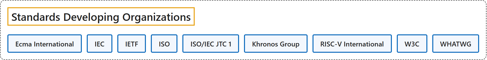

1. Standards Developing Organizations
Classification

Glossary
| Term | Definition | 中文翻译 | Source |
|---|---|---|---|
| Standards Developing Organizations 标准制定组织 |
"any organization that develops and approves standards using various methods to establish consensus among its participants." | 任何以各种方法在参与者之间达成共识、以此制定并批准标准的组织。 | National Institute of Standards and Technology, n.d., "standards developing organization" entry, definition 1 |
| Ecma International Ecma 国际 |
"Ecma International is an industry association dedicated to the standardization of information and communication systems" | Ecma 国际是一个行业协会，致力于信息与通信系统的标准化。 | Ecma International, n.d., para. 1 |
| IEC 国际电工委员会 |
"Founded in 1906, the IEC (International Electrotechnical Commission) is the world’s leading organization for the preparation and publication of international standards for all electrical, electronic and related technologies." | IEC（国际电工委员会）成立于 1906 年，是全球领先的组织，负责编制和发布所有电气、电子及相关技术的国际标准。 | International Electrotechnical Commission, n.d., para. 1 |
| IETF 互联网工程任务组 |
"The Internet Engineering Task Force (IETF), founded in 1986, is the premier standards development organization (SDO) for the Internet." | 互联网工程任务组（IETF）成立于 1986 年，是互联网领域首要的标准制定组织（SDO）。 | Internet Engineering Task Force, n.d., para. 1 |
| ISO 国际标准化组织 |
"ISO is an independent, non-governmental organization made up of members from the national standards bodies of 177 countries." | ISO 是一个独立的非政府组织，由来自 177 个国家的国家标准机构的成员组成。 | International Organization for Standardization, n.d., para. 1 |
| ISO/IEC JTC 1 ISO/IEC 第一联合技术委员会 |
"ISO-IEC Joint Technical Committee (JTC 1) is a consensus based, voluntary international standards group focussing on information technology (IT)." | ISO-IEC 联合技术委员会（JTC 1）是一个基于共识的自愿性国际标准团体，专注于信息技术（IT）。 | ISO/IEC Joint Technical Committee 1, n.d., para. 1 |
| Khronos Group Khronos 组织 |
"The Khronos Group is an open, member-driven consortium that provides a space for the creation of the interoperability standards that enable developers to harness the full power of 3D graphics, XR (VR & AR), parallel computing, machine learning, vision processing and the metaverse." | Khronos Group 是一个开放且由成员驱动的联盟，为创建互操作性标准提供空间，这些标准使开发者能够充分发挥 3D 图形、XR（VR 与 AR）、并行计算、机器学习、视觉处理和元宇宙的全部能力。 | The Khronos Group, n.d., para. 2 |
| RISC-V International RISC-V 国际 |
"RISC-V International is the global non-profit home of the open standard RISC-V Instruction Set Architecture (ISA), related specifications, and stakeholder community." | RISC-V 国际是全球性的非营利家园，承载开放标准 RISC-V 指令集架构（ISA）、相关规范和利益相关者社区。 | RISC-V International, n.d., para. 1 |
| W3C W3C |
"The World Wide Web Consortium (W3C) is an international public-interest non-profit organization where Member organizations, a full-time staff, and the public work together to develop web standards." | 万维网联盟（W3C）是一个国际性的公益非营利组织，会员组织、全职员工和公众在这里共同制定 Web 标准。 | World Wide Web Consortium, n.d., "Who we are" section, para. 1 |
| WHATWG WHATWG |
"The Web Hypertext Application Technology Working Group (WHATWG) is a community of people interested in evolving the web through standards and tests." | 网页超文本应用技术工作小组（WHATWG）是一个由人组成的社区，这些人致力于通过标准和测试推动网络的演进。 | Web Hypertext Application Technology Working Group, n.d., para. 1 |
References
Ecma International. (n.d.). Home. Retrieved October 27, 2026, from https://ecma-international.org/
International Electrotechnical Commission. (n.d.). Who we are. Retrieved October 27, 2026, from https://www.iec.ch/who-we-are
International Organization for Standardization. (n.d.). Structure and governance. Retrieved October 27, 2026, from https://www.iso.org/structure.html
Internet Engineering Task Force. (n.d.). Introduction to the IETF. Retrieved October 27, 2026, from https://www.ietf.org/about/introduction/
ISO/IEC Joint Technical Committee 1. (n.d.). About. Retrieved October 27, 2026, from https://jtc1info.org/about/
National Institute of Standards and Technology. (n.d.). Standards developing organization. In CSRC glossary. Retrieved October 27, 2026, from https://csrc.nist.gov/glossary/term/standards_developing_organization
RISC-V International. (n.d.). About RISC-V. Retrieved October 27, 2026, from https://riscv.org/about/
The Khronos Group. (n.d.). About the Khronos Group. Retrieved October 27, 2026, from https://www.khronos.org/about/
Web Hypertext Application Technology Working Group. (n.d.). FAQ. Retrieved October 27, 2026, from https://whatwg.org/faq
World Wide Web Consortium. (n.d.). About us. Retrieved October 27, 2026, from https://www.w3.org/about/